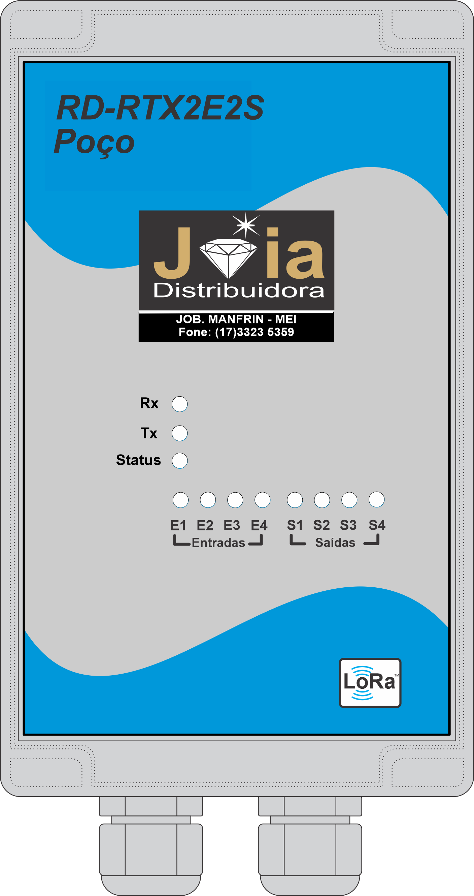
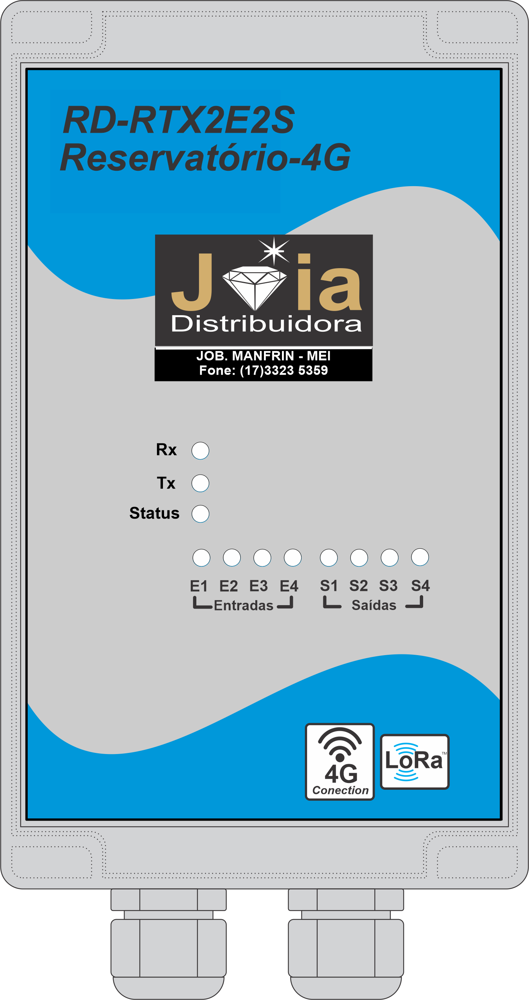
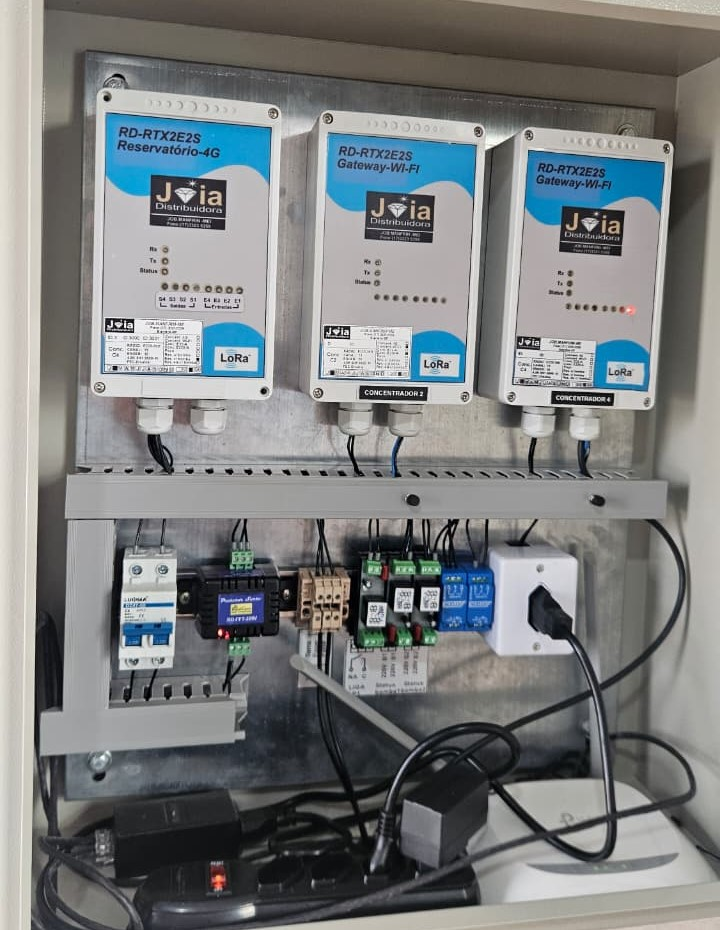
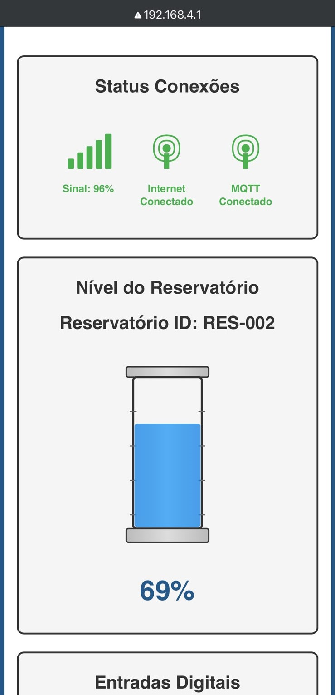
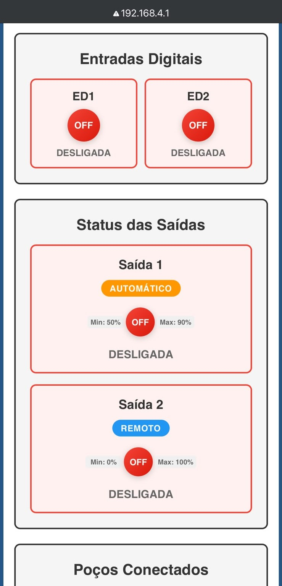
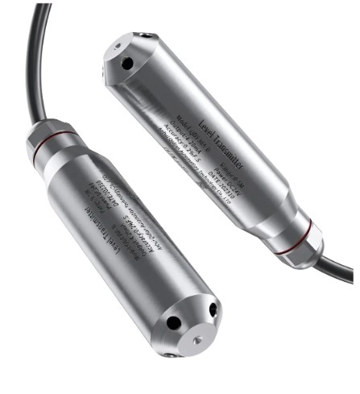
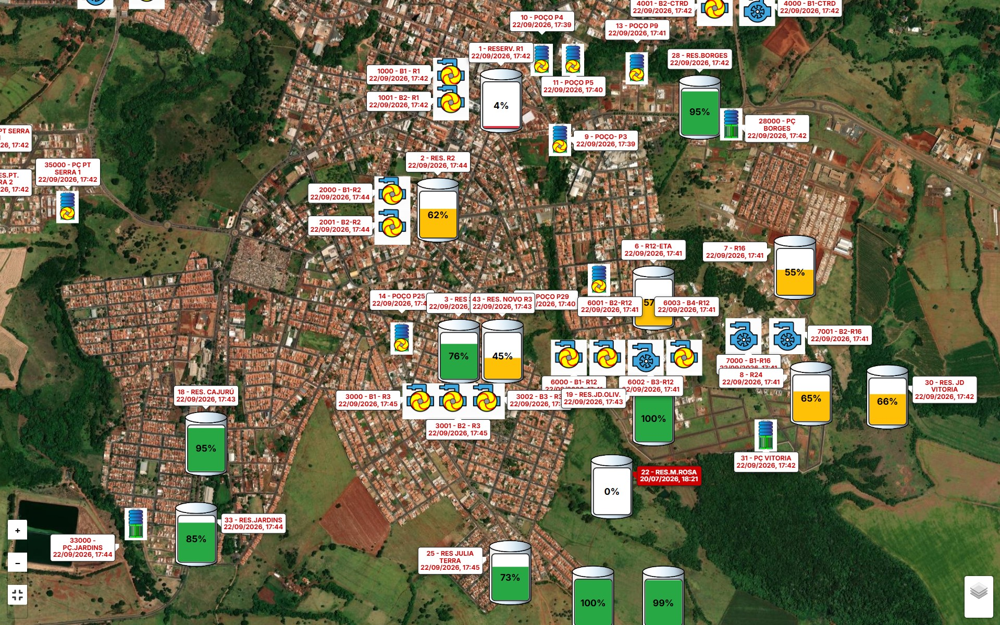
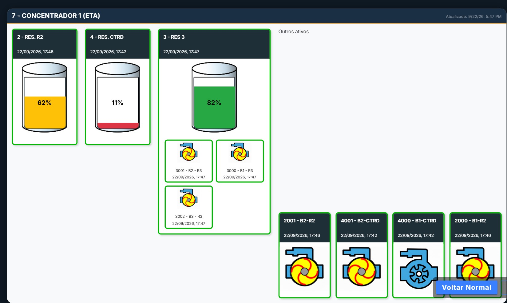

Poço
Instalado junto à bomba, recebe por rádio LoRa o comando de nível vindo do reservatório e liga ou desliga a bomba automaticamente.
LoRa
Consultar disponibilidade
Telemetria LoRa & 4G para o campo
A Jóia Distribuidora leva módulos de rádio LoRa e gateways 4G até a sua propriedade: o nível é medido automaticamente, a bomba liga e desliga sozinha, e você acompanha tudo à distância — sem depender de Wi-Fi local.

Por que automatizar
Cada módulo troca dados por rádio o tempo todo, para que a decisão de ligar ou desligar a bomba aconteça sozinha — e para que você só precise ir até o poço quando for realmente necessário.
A bomba responde sozinha aos níveis configurados no reservatório, 24 horas por dia, sem intervenção manual.
A tecnologia LoRa conecta pontos distantes da propriedade direto por rádio, sem depender de internet no local.
O gateway Reservatório-4G leva os dados da fazenda até você, onde estiver, através da rede celular.
Caixa vedada e com prensa-cabos, pronta para instalação externa junto ao poço ou ao reservatório.
LEDs de Rx, Tx e Status deixam a instalação e a manutenção em campo mais rápidas, sem adivinhação.
Acompanhe o nível do poço e do reservatório à distância e evite viagens desnecessárias até a propriedade.
Linha RD-RTX2E2S
Os módulos conversam entre si por rádio LoRa e formam, juntos, o sistema completo de automação — dos sensores de poço e reservatório aos gateways que levam tudo até a plataforma.
Instalação em campo
Os módulos RD-RTX2E2S são reunidos em um quadro de comando e conectados à internet por um gateway — a escolha entre Wi-Fi e 4G depende do local e de quantos equipamentos ficam próximos uns dos outros.

Interface local de configuração
Ao conectar em qualquer módulo RD-RTX2E2S, você acessa uma página de configuração própria dele — aqui usamos a do Reservatório-4G como exemplo, mas o poço, os gateways e as demais variantes de reservatório funcionam da mesma forma.


Plataforma web
Os dados captados pela sonda hidrostática de cada ponto chegam até você pela plataforma de monitoramento da Jóia Distribuidora, alimentada pelo gateway Wi-Fi ou 4G de cada instalação. Cadastre cada poço e reservatório da propriedade e acompanhe tudo à distância.

Instalada dentro do poço ou do reservatório, a sonda mede a pressão da coluna d'água e converte essa leitura em nível — o dado que o módulo do Reservatório transmite por rádio LoRa até a plataforma.


Telemetria • Rádio, ao vivo
O reservatório monitora seu nível e transmite o valor via rádio. A casa de bomba (gateway) e o poço escutam a mesma transmissão ao mesmo tempo — o poço liga ou desliga a bomba conforme o setpoint configurado.
Pronto para automatizar?
Atendimento direto com quem instala e conhece o equipamento na prática.